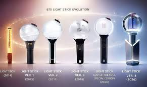

HYBE x BTS
Transformación Digital Sostenible
Este proyecto analiza cómo HYBE Corporation y BTS representan una nueva era de innovación digital, sostenibilidad y conexión global a través del fandom ARMY y plataformas tecnológicas como Weverse.
Este proyecto analiza cómo HYBE Corporation y BTS representan una nueva era de innovación digital, sostenibilidad y conexión global a través del fandom ARMY y plataformas tecnológicas como Weverse.
HYBE utiliza un modelo centrado en la innovación tecnológica, la sostenibilidad y la experiencia del usuario. Gracias a plataformas digitales como Weverse, la empresa logró transformar la relación entre artistas y fandoms.

Comunidad ARMY global, gran impacto cultural, liderazgo tecnológico y estabilidad financiera.
Altos niveles de producción física y consumo de recursos.
Crear entretenimiento sostenible y campañas ecológicas.
Presión ambiental y críticas hacia el impacto industrial.
Implementar estrategias digitales sostenibles que fortalezcan el impacto positivo de HYBE y BTS.
• Reducir el impacto ambiental.
• Impulsar energías renovables.
• Mejorar bienestar del talento.
• Fortalecer la participación de ARMY.
| Estrategia | Acción | Periodo |
|---|---|---|
| Digitalización Verde | Optimización de plataformas digitales | 2026-2027 |
| Merch Sostenible | Lightsticks ecológicos y reciclables | 2026-2028 |
| Bienestar Artístico | Programas de salud mental | 2026 |

El proyecto será monitoreado mediante indicadores ESG, participación del fandom ARMY y métricas de sostenibilidad.
Líder de BTS y portavoz de mensajes sociales.
Artista global e ícono digital de la nueva generación.
Reconocido por su sensibilidad artística y emocional.
Uno de los fandoms más grandes e influyentes del mundo.

HYBE y BTS representan un modelo innovador donde la tecnología, la música y la sostenibilidad pueden coexistir. La transformación digital no solo depende de herramientas tecnológicas, sino también del impacto social y humano que generan.